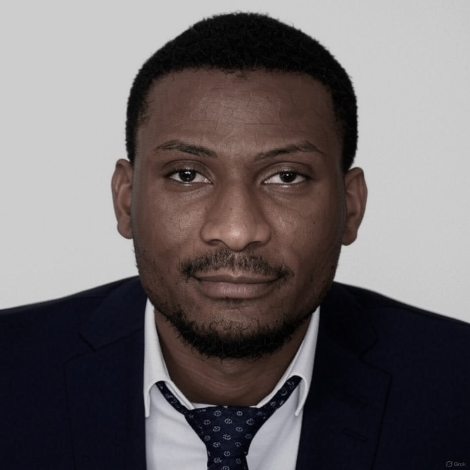

Toheeb Adekola Aminu
PhD Student in Economics
Northern Illinois University
Health Economics · Public Economics · Development Economics
I am a PhD student in Economics at Northern Illinois University. My research is in health, public and development economics. My work uses household survey microdata and recent difference-in-differences methods.
Before the PhD, I completed the Erasmus Mundus Joint Master's in Economics of Globalisation and European Integration at the Universities of Bari, Ghent and Tartu, was a research intern at UNU-CRIS in Bruges, and spent three years in audit at KPMG Nigeria. I received my BSc in Economics from the University of Ilorin.
Research
Publications
Abstract
We study whether the quality of institutions conditions the effect of foreign direct investment on the environment in 40 Sub-Saharan African countries. Using system GMM, we estimate the institutional quality thresholds above which FDI starts to support environmental sustainability, and we examine the non-linear relationship between economic growth and the ecological footprint.
Work in Progress
Studies how the staggered state adoption of the Violence Against Persons (Prohibition) Act changed beliefs about domestic violence, and whether the effect differs in the twelve states with Sharia penal codes. Uses four waves of the Nigeria DHS (2008–2024).
Teaching
Teaching Assistant, Northern Illinois University, 2024–present
- ECON 660Microeconomic Analysis (first-year graduate core) · led recitation sections
- ECON 591Mathematical Methods for Economics (first-year graduate core) · led recitation sections
- ECON 260Principles of Microeconomics
Education
- 2024–presentPhD, Economics
Northern Illinois University - 2022–2024Erasmus Mundus Joint Master's, Economics of Globalisation and European Integration
Universities of Bari, Ghent and Tartu · Distinction (108/110) - 2014–2018BSc, Economics
University of Ilorin · First Class Honours, joint top two in class
Fellowships and Awards
- 2024–presentGraduate Assistantship
Department of Economics, Northern Illinois University - 2022–2024Erasmus Mundus Joint Master's Scholarship
European Union (EACEA) - 2015–2018University Scholar, for the highest CGPA after the first year
University of Ilorin - 2017–2018National Merit Scholarship
Total Nigeria and Nigerian National Petroleum Corporation (NNPC)